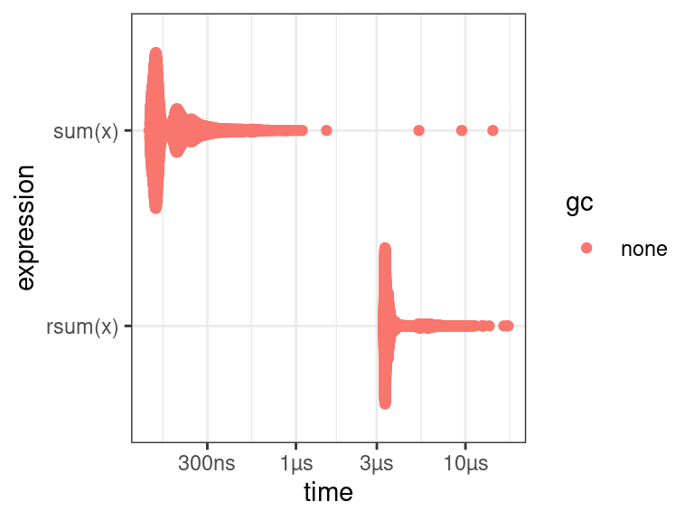

Profiling and Benchmarking Performance
David Gerard
2022-02-14
Learning Objectives
- Chapter 23 of Advanced R.
- Profiling and microbenchmarking.
Motivation
Before you get started, the two rules of software optimization are (Jackson 1975):
- Don’t do it.
- Don’t do it yet (for experts only).
If you try to optimize too soon, you will usually end up wasting more time than you save. Your code will usually become clunky and harder to maintain.
You should only start optimizing your code after:
- You have a perfectly clear and unoptimized solution.
- You have profiled your code.
It is hard to tell what code is fast versus slow, so we have tools to measure this.
Profiling is measuring the run-time on each line of code.
Use
{profvis}for profiling:library(profvis)Microbenchmarking is comparing performance between different pieces of code.
Use
{bench}for microbenchmarking:library(bench)When you go back to optimize, only work on the slowest parts.
Profiling a Function
Place a function call inside
profvis::profvis()to profile the function.It is better for the profiler if you source the code first (it gives you better graphics). So I place the following code in “07_example.R.”
f <- function() { pause(0.1) g() h() } g <- function() { pause(0.1) h() } h <- function() { pause(0.1) } profvis(f())Then use
source()on it before placing the function inprofvis().source("./07_example.R") profvis(f())The pane that pops up looks like this:
The top pane is a bar-graph for the execution time for each line of code.
This doesn’t tell you why some lines are slower, e.g.
h()is called twice, so that’s why it is twice as long as other lines.The bottom pane is called a flame graph.
- \(x\) axis is total time.
- Top of \(y\) axis is what is currently being run.
- The bars beneath the top are the ancestry.
- From left to right we have
pause()running inf().pause()running ing()running inf().pause()running inh()running ing()running inf().pause()running inh()runningf().
So if we saw this, we would try speeding up
h()since it takes up half the amount of total time, so we can probably have the most speed improvements by working on that.The data tab has the same information as the flame graph, but vertically, and it let’s you collapse parts of it.
If you see
<GC>in in the profile, then this stands for “Garbage Collection” and is a sign that you are making lots and lots of copies that are being garbage collected. E.g.f <- function() { x <- integer() for (i in 1:1e4) { x <- c(x, i) } } profvis(f())The line where the issue occurs can be seen in the memory column.
To profile an R package, just load it into memory via
devtools::load_all(), then runprofvis()using code from that package on some example data.
Notes
You cannot profile C/C++ code using
{profvis}. You would have to use a C++ profiler like gperftools. More information can be found in Section 3.4 of Writing R Extensions.Using anonymous functions will make the results of
{profvis}confusing.The results are are a statistical sample of your call stack (what is being run and its ancestors), so your results will differ. But this only matters for really fast functions, which aren’t the ones you care about.
Exercise
Here is a crappy implementation of fitting a linear model:
lmsuck <- function(x, y) {
x <- cbind(1, x)
betahat <- c(solve(t(x) %*% x) %*% t(x) %*% y)
names(betahat) <- c("beta0", "beta1")
fits <- c(x %*% betahat)
resids <- y - fits
sigma <- sqrt(sum(resids^2) / (nrow(x) - ncol(x)))
return(list(betahat = betahat,
sigma = sigma,
fits = fits,
resids = resids,
x = x,
y = y))
}It seems to give similar results:
lm_sout <- lmsuck(x = mtcars$wt, y = mtcars$mpg)
lm_g <- lm(mpg ~ wt, data = mtcars)
lm_sout$betahat## beta0 beta1
## 37.285 -5.344coef(lm_g)## (Intercept) wt
## 37.285 -5.344lm_sout$sigma## [1] 3.046sigma(lm_g)## [1] 3.046Profile lmsuck() on a large (\(n \geq 100000\)) simulated dataset and tell me what takes the longest.
Microbenchmarking
Benchmarking will compare small pieces of code.
This is only useful if you are using this code thousands of times a second.
Don’t try to generalize small fast code with slower versions (i.g. knowing what’s faster when \(n=1\) tells you nothing about what’s faster when \(n = 10000000\)).
Use
bench::mark()to do microbenchmarking.rsum <- function(x) { sval <- 0 for (i in seq_along(x)) { sval <- x[[i]] + sval } return(sval) } x <- 1:100 lb <- bench::mark( sum(x), rsum(x) ) lb## # A tibble: 2 × 6 ## expression min median `itr/sec` mem_alloc `gc/sec` ## <bch:expr> <bch:tm> <bch:tm> <dbl> <bch:byt> <dbl> ## 1 sum(x) 135.97ns 156.11ns 4903545. 0B 0 ## 2 rsum(x) 3.27µs 3.44µs 266521. 68.4KB 0So running
sum()a million times would take about 0.2 seconds. Runningrsum()a million times would take about 5 seconds.But rarly do you need to run
sum()a million times, so typically either one is OK in real life.Always pay attention to the units. 1 ms \(>\) 1 µs \(>\) 1 ns.
- 1 ms, then one thousand calls take a second.
- 1 µs, then one million calls take a second.
- 1 ns, then one billion calls take a second.
There is a nice plot method for
bench_markobjects (multimodality comes from other processes running in the background).plot(lb)
Exercise
For summing up the columns of a matrix, I can think of at least four ways
colSums()- Matrix multiplication on the left by a vector of
1’s - Using a for-loop on the columns, calculating the sum each time.
- Using functional programming with
apply().
Create functions that implements all four of these approaches and tell me which one is the fastest for \(100\times 100\), \(1000\times 100\), and \(100\times 1000\) matrices.
New Functions
profvis::profvis(): Profile a function.bench::mark(): Microbenchmark multiple expressions.
References

This work is licensed under a Creative Commons Attribution-NonCommercial 4.0 International License.